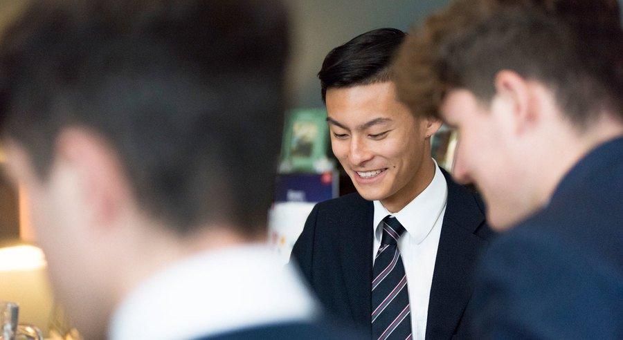
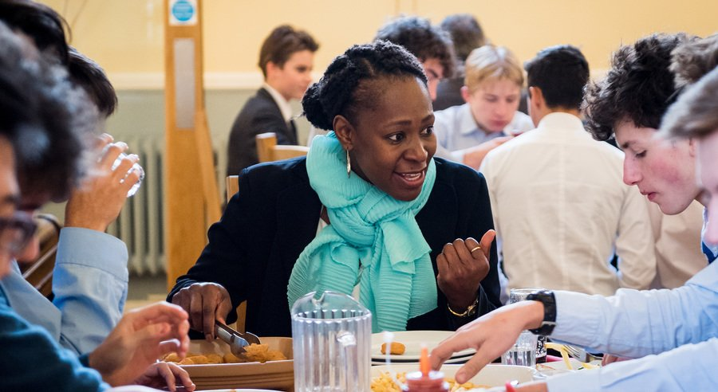

Explore
Celebrating the individual
So much of what makes Winchester exceptional is the people who are a part of the school. Also, its beauty - the buildings, the grounds, the setting. Our heritage and archives provide insight into the past, while our community partnerships prepare boys for a future of compassionate leadership.
LATEST STORIES FROM CAMPUS
View All
 19 July 2019
19 July 2019
Getting a sense of Winchester College
Cherish freedom
“Chemistry is my favourite subject - it’s like art for a scientific mind, full of drawings, shapes and diagrams.”
CHARLES • YEAR NINE
Learning
Teaching boys to think
Academic excellence is achieved when boys and teachers share a love of learning. Extending beyond the curriculum, we explore each subject in richness and depth. The same dedication is also brought to music, sports and the arts. A Winchester education is self-motivated, rounded and encourages a culture of curiosity and exploration.
Learn MoreLiving
A happy balance
Pastoral care is never behind the scenes at Winchester. The school operates as a fully-integrated community, where Housemasters, house teams, senior staff and teachers (known as dons) are all on-hand to support the boys throughout their school day, and their school career. Providing a sense of community and an appreciation of individual perspectives is not only our aim, but also our proudest achievement.
Find out moreBoarding
Find out more
Pastoral Care
Find out more
